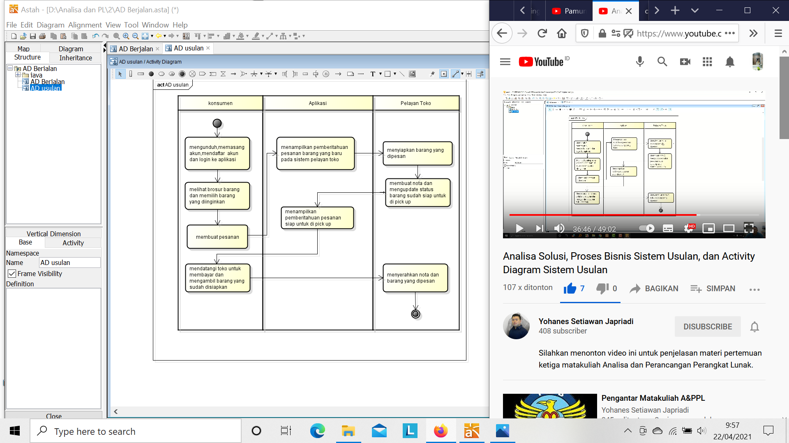

nim : 1811500057
nama : Devi Kholilah
kelompok : TI6J
berikut adalah hasil saduran saya :
1. Menganalisa sistem usulan pada pemesanan di sistem berjalan
2. Sistem usulan yang dibuat harus memberikan manfaat bagi konsumen dan pelayan toko yang bertujuan memudahkan proses transaksi
3. Pada sistem usulan yang dibuat lebih dapat meminimalisir waktu dalam proses pemesanan yang sedang berlangsung


hasil file projek astah Download